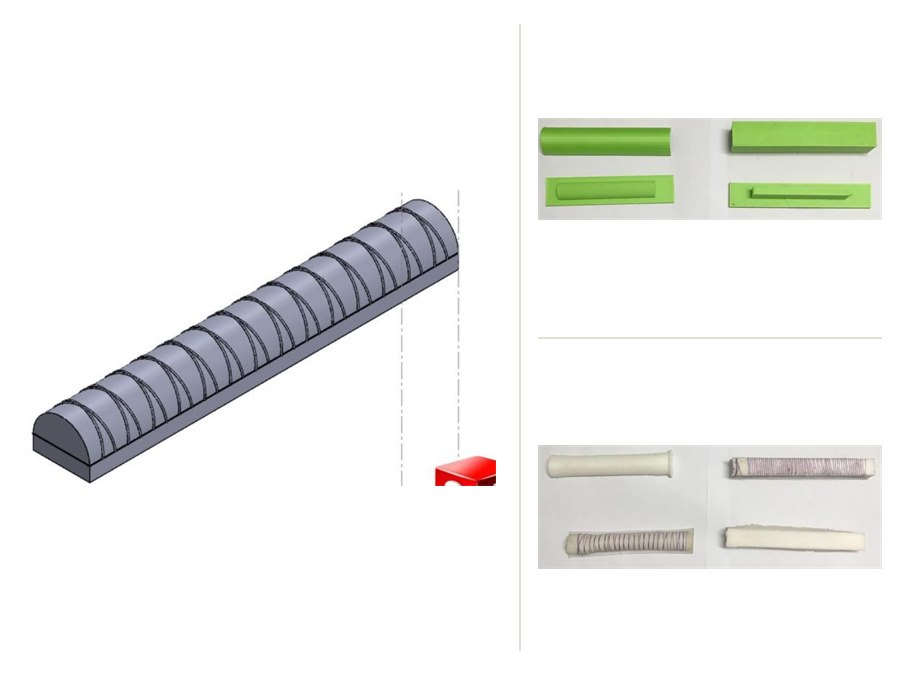
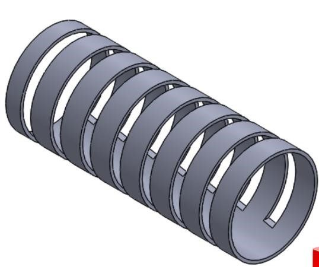
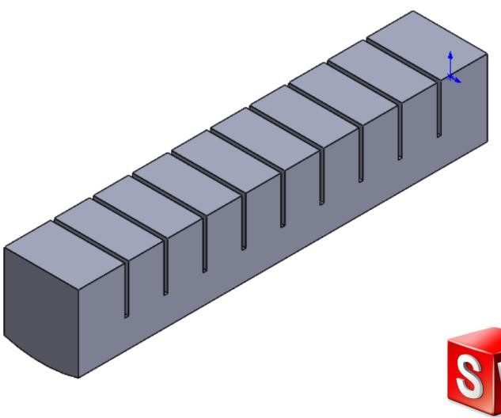
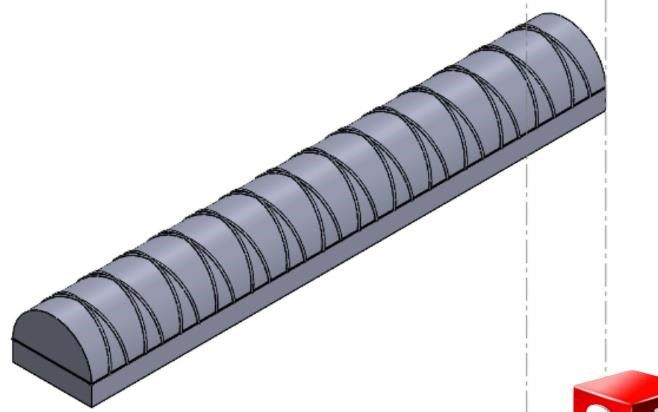
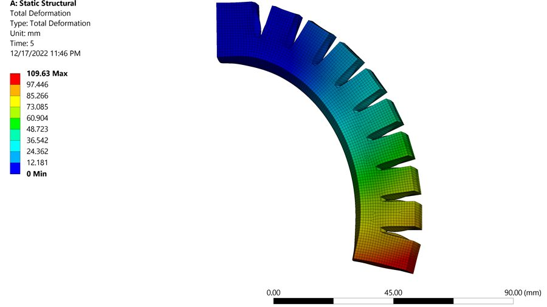
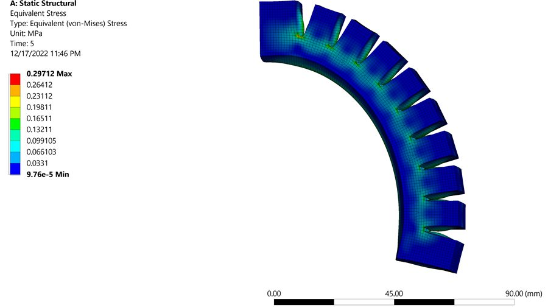
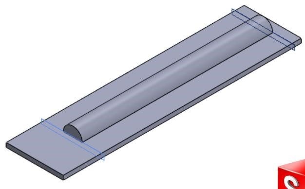
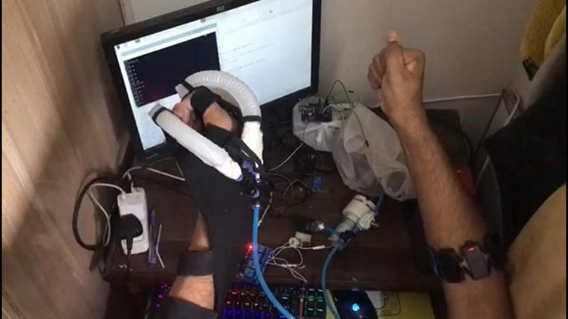

REHABOTICS Pneumatic Soft Robotic Glove
Fibre-reinforced silicone bending actuators for hand rehabilitation.


Research brief
- Objective
- Move a paretic hand with a wearable device, designed against targets of under 0.5 kg mass and 10–15 N flexion force.
- Approach
- Three actuator geometries screened in ANSYS before committing to moulds, then soft lithography, bench characterisation and a master–slave pneumatic drive.
- Individual contribution
- Actuator design across the three geometries, the ANSYS analysis, soft-lithography fabrication, and the pneumatic drive and its master–slave control.
- Experimental evidence
- 120–180° of flexion per finger segment at 100 kPa, measured on the bench. Mass and force remained design targets.
Designing motion into the material
A wearable hand device has to stay light enough not to fatigue the limb it assists, and deliver enough force to be useful against a resisting hand. The project set those targets at under 0.5 kg and 10–15 N, which pointed toward soft pneumatic actuation rather than a rigid linkage.
That choice moves the difficulty into the actuator. A chamber pressurised without constraint simply inflates; to make it bend, one side has to be stopped from extending. Three geometries were designed and compared. The selected one is a semicircular chamber with a helical fibre wrap to resist radial growth and an inextensible buckram layer bonded along the base to force curvature rather than elongation.






Screening designs before cutting moulds
Casting silicone is slow and a mould is expensive to be wrong about. Each geometry was analysed in ANSYS with a hyperelastic material model, looking at the deformed shape under pressure and at where stress concentrated in the walls. The selected geometry reached the intended bending at 50 kPa in simulation.
These are simulation results, used to rank candidates and to catch thin-wall problems early — not as a prediction of what the cast parts would do. No quantitative comparison between simulated and measured deformation was carried out.




Moulds, silicone and trapped air
Two-part moulds were drawn in SolidWorks and 3D printed in PLA, then cast in Ecoflex 00-30 by soft lithography. The recurring failure was trapped air: a bubble in a chamber wall becomes a weak point that balloons or bursts under pressure.
Mixed silicone was therefore degassed under vacuum before pouring, using a pressure cooker as the vacuum chamber. Casting quality visibly improved once degassing was introduced, though no formal yield or defect rate was recorded.




Driving it
A Raspberry Pi 4 drives a diaphragm pump through a relay, with a regulator and solenoid valves setting and releasing chamber pressure and a pressure sensor closing the loop on the commanded level.
In master–slave mode the intended motion comes from the user's functional hand. The same pneumatic drive also accepts commands from the sEMG interface built alongside it.
On the bench, an individual actuator reached 120–180° of flexion per finger segment at 100 kPa, the working pressure limit of the pump used.
Limitations
Not established
- Segment flexion is not hand function — the 120–180° figure is the curvature of one actuator segment. It does not establish the range of motion a wearer's finger achieves, and no assessment of grasp, pinch or task-level hand function was carried out.
- Mass and force are targets — under 0.5 kg and 10–15 N were the design requirements. Delivered fingertip force and worn mass were not characterised as measured results.
- Simulation is not validation — the FEA guided selection; measured bending was not compared quantitatively against the simulated deformation.
- Durability — fatigue life and long-term seal integrity of the cast actuators were not tested.
A final-year project carried out by a team of four. The project received NUST NGIRI development funding in July 2023 and reached the finals of the Festival of Innovation, Creativity and Skills in August 2023.